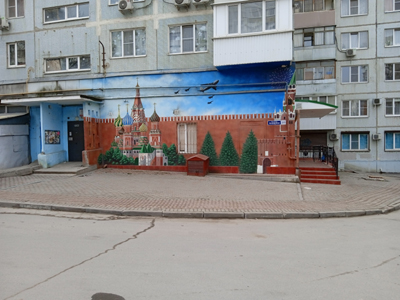
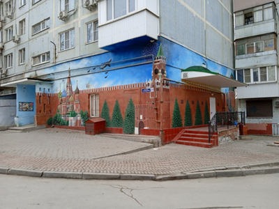
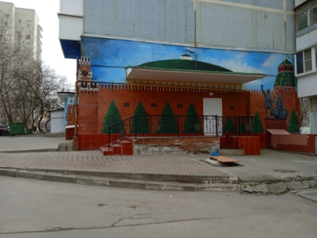
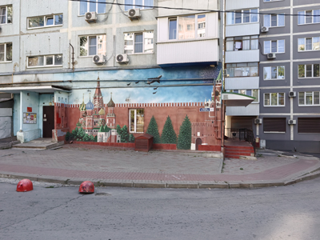
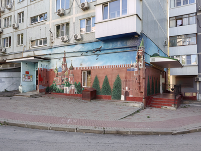
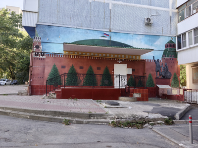

Красная площадь в обычном дворе






Муралы, как и стрит-арт вообще, явление далеко не новое, а в последние годы так и вовсе стало делом вполне привычным. Однако это не делает хороший стрит-арт менее интересным.
Этот мурал я случайно обнаружил, когда шел по каким-то делам. Конечно, как в большинстве подобных ситуаций уже не вспомнить, по каким именно. Помню, что решил срезать путь через двор девятиэтажки. Было это в марте 2022 года, если верить дате, записанной в файле сделанного тогда фото.
Я сразу обратил внимание на качество рисунка. Он довольно детализированный, очень аккуратный и какой-то особенно душевный, теплый. Не могу сказать, что испытываю трепет перед Кремлем как таковым, но это изображение одного из главных символов России притягивает взгляд. Хочется рассматривать его, изучать детали.
Покопавшись в интернете, я выяснил, что мурал был сделан примерно в 2014 году. Инициатива принадлежит предпринимателю Сергею Кирееву, который владел компанией, занимавшейся строительством и благоустройством района. Он же и финансировал проект. А вот имена художников остаются в тайне. В общем для стрит-арта ситуация распространенная. За достоверность этой информации не отвечаю — так было написано в интернете. Так что, если вдруг в именах и датах закралась ошибка, прошу простить.






Местные жители говорят, что раньше на табличках, «висящих» на стенах Кремля, были видны имена, думаю, понятно, чьи. А нынче имен там не видно, если только очень захотеть и присмотреться. Стерли специально — но зачем? Или от времени выцвела очень точечно именно эта часть мурала?
Интересная особенность, что мурал расположен на двух стенах сразу. Вообще, на мой взгляд, очень хорошее оформление фасада. Рисунок будто оживляет большую часть двора. При этом без лишнего пафоса, но в поле зрения постоянно находятся наши патриотические символы. Выглядит приятно. Без этого мурала был бы просто обычный дом, каких в городе пруд пруди, а так дом обретает индивидуальность.
Свежее фото сделано в сентябре 2026 года. И сам объект, и территория вокруг изменились мало. Отремонтировали ступеньки, повесили рядом с дверью какой-то щит, поменяли люк, немного облез асфальт, покрасили в приятный серый цвет фасад дома справа, появились полусферки, ограничивающие парковку, добавилось несколько сплит-систем в квартирах — да вот, пожалуй, и все заметные изменения. А сколько отличий найдете вы?